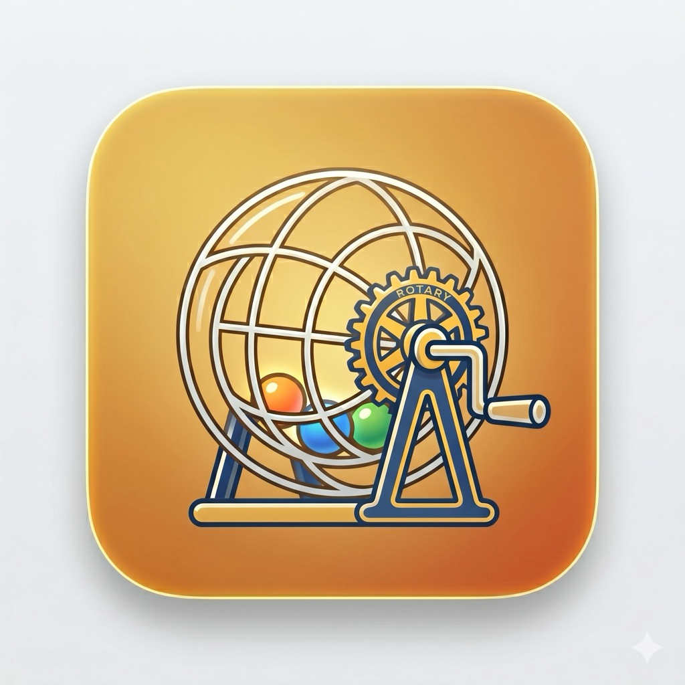

Reverse Lottery Drawing for Events
ReverseDraw is a modern, elegant reverse-drawing lottery app designed for events, fundraisers, and community gatherings. Instead of the traditional "pick from the hat" experience, ReverseDraw brings excitement to drawing events with a sleek, interactive interface.
Two-screen setup with real-time history tracking and beautiful animations
Final Ten elimination and automatic pot splitting for multiple winners
Native macOS and iPad apps with full split-screen support
Automatic session saving and full event archives